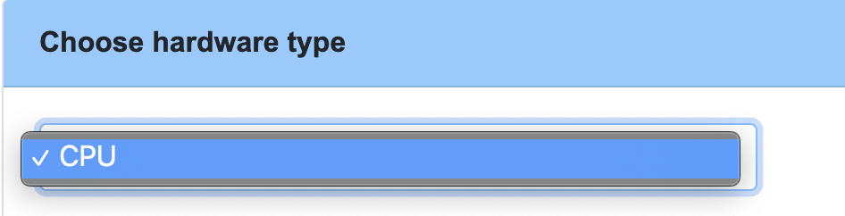

1. Introduction
Machine Learning On OpenLab(MOO) aims to help the data experts to reproduce the machine learning environment. This project is based on OpenLab now.
1.1 MOO
The reason for MOO, as Machine Learning is hard to reproduce cross multiple environments, as ML lacks:
- Declarative Infrastructure. Like: Compute, Storage and Network Layers of the stack.
- Declarative Systems. Like: Kernel Drivers, Configuration, Management Layers of the stack
- Pipeline description
- Data
- Separation of discrete steps(data preparation, featurization, estimation, evaluation, prediction and etc.
These should be defined declaratively, using vendor neutral tech, to simplify reuse regardless of the choice of environment.
So MOO will try to define the model metadata to describe the environment of trained model, such as using tensorflow, version 1.12.0, python runtime and some necessary model description. MOO will use the necessary model information to reproduce the training or inference environment, this includes:
- Installing all necessary services in the target host. (Currently, this project only support Tensorflow framework and Python runtime)
- Provide several ways to touch the environment to do training or inference in the environment.
- Get the training or inference results and see how about your model is good enough.
The above is enabled via your pass to MOO.
MOO provides CPU or GPU machine learning environment, you can choose which environment can fit your model. Then MOO will provide a environment to train and get training result to you, also if you want to access the environment to continue develop the model or provide some other new train data to go forward the train process, MOO will provide the related information to you.
1.2 Openlab
OpenLab is a community program to test and improve support for the cloud-related SDKs/Tools as well as platforms like Kubernetes, Terraform, CloudFoundry and more. The goal is to improve the usability, reliability and resiliency of tools and applications for hybrid and multi-cloud environments. All of the Machine Learning environments are provided by OpenLab, OpenLab will manage the life cycle of the environment. If you want to know more, please visit OpenLab
2. How It Work
2.1 Preparation
MOO provides a web UI for simplify the whole things. But before start using MOO, you need to do the following things first.
-
Module ZIP file preparation
MOO will accept a ZIP file or URL which direct to a ZIP file. The ZIP file includes:
-
metadata.yaml
The YAML needs to try to descript the model enviroment and model itself as much as possible.
-
model python file(Currently only support tensorflow python script)
The python file is treated as the entrypoint to training the specific model. Notes: The model file provided must be compssed to ZIP format.
-
-
Decide the host place of the ZIP file
-
Host on the website, such as the Object Storage Sever in Huawei Public Cloud.
MOO supports fetching the ZIP file via URL, you can just provide a URL to MOO, it will download the ZIP file and begin the train process automaticly.
-
On your local enviroment.
MOO also supports uploading the ZIP file directly.
-
-
CPU or GPU
The backend hardware totally based on your python script
2.2 WorkFlow
Here, we had prepared the model file. We can access the web UI then.
a. Click "WorkFlow" Sub-Tag:

b. Choose a way to upload your Model ZIP file:
c. Choose CPU or GPU:

d. Login the Environment or not:

e. Click Submit Button and Enjoy. You will see the Job process histroy here:

Now your model had been submited successful, if you want to see the your Job status, you can just Click "Get Result" Button or forward to "Status"

Or
Here example, we can see the Job name is moo-job-hqx9uo, which is a CPU version Job and we don't want to login the enviroment(we don't "√" Login the Environment or not). We will jump to Status page and see the job status. There are several columes:
-
Job Name
The submited job name.
-
Credential
The Username and Password to login the ML enviroment provided by MOO.
-
IP Address
The public ip address and external port through ssh.
-
ML Result Link
The process log or already trained model url. You can access the model after training by MOO enviroment and the training log.
-
Inference
The inference page after model training complete.
-
Status The MOO job status.
Then, let's search the moo-job-hqx9uo job.

In above shows, moo-job-hqx9uo job had been defined as a non login enviroment job. So we can see the Status of moo-job-hqx9uo job is SUCCESS, the ML Result Link and Inference had been generated. If you want to login the Environment, MOO will keep the enviroment for a while, so ML Result Link will be replaced by "Please login the ML enviroment instead!", and won't generate the Inference page.
f. Go to the Result Link
In "process.log", you will see the whole training histroy about your model. In "training_result" directory, we will see the new trained model.
g. Taste Online Inference
Now click Inference Go Button to access the Inference page. Upload a new picture or file for pdict, and see the pdiction result in the following Result block.
3. Metadata Definition
Model Metadata aims to descript the model train enviroment, module application and parameters during training process as much as possible. It mainly includes(Currently, TODO):
-
Framework
- name
The framework name, such as tensorflow, kubeflow and etc.
- version
The framework version, such as 1.12.0
- runtime
The framework runtime, such as python, go, java, c
-
entrypoint
The entrypoint about model.
-
output_folder
The directory which process.log and model would be stored in.
3.1 Concept
...
3.2 Parameters
...
3.3 Example
framework:- name: tensorflow- version: 1.12.0- runtime: python2.7entry_point: tensorflow_test_mnist.pyoutput_folder: training_result